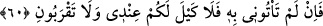
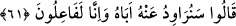

“Görmüyor musunuz, ben ölçeği tam dolduruyorum” payınızı size tam olarak
veriyorum.
Kâşifî şöyle der: “Yâni ben ölçeği tam ölçerim, kimsenin hakkını eksik vermem.”
“Ve ben misafirperverlerin en iyisiyim.” Ayrıca ben sizi ağırlayıp misafir etme
konusunda iyilikseverliğin zirvesindeyim. Hakîkaten de kardeşlerini dediği gibi
ağırlamıştı. Yûsuf (a.s.) bu sözü, yaptığı iyilikleri kardeşlerinin başına kakmak için
değil, kendilerine emrettiği şeyi yapmalarını teşvik etmek için söylemiştir.
60. Eğer onu bana getirmezseniz, artık benim yanımda size verilecek bir ölçek
(erzak) yoktur, bana hiç yaklaşmayın!”
“Eğer onu” o kardeşinizi “bana getirmezseniz, artık” bundan sonra yani ileride
“benim yanımda size” bırakın ölçüyü tam olarak vermeyi “verilecek bir ölçek” erzak
bile “yoktur.” Sizi ağırlayıp misafir etmek şöyle dursun ülkeme girmek suretiyle “bana
hiç yaklaşmayın” bile! Yâni eğer onu bana getirmezseniz, (ölçüden) mahrum kalır ve
bana yaklaşamazsınız.
Derler ki: Allah Teâlâ Yûsuf’a, Bünyamin’i getirtmeyi, babasının kendisinden
ayrılarak kazandığı mükâfatları artırmak için emretmiştir.
el-İrşâd’da der ki: “Âyet, Yûsuf (a.s.)’ın kardeşlerinin defalarca zahîre alma imtiyazı
elde etme niyetinde olduklarına ve bu niyetin Yûsuf (a.s.) tarafından bilindiğine delâlet
etmektedir.”
61. Dediler ki: “Onu babasından istemeye çalışacağız, mutlaka bunu yapacağız.”
“Dediler ki: “Onu babasından istemeye çalışacağız,” Bünyamin’i babasının elinden
alma hususunda çeşitli çare ve hîlelere başvuracağız, bu konuda gayret göstereceğiz. Bu
ifadeyle istenen şeyin ne kadar değerli, onu elde etmenin ise ne kadar zor olduğuna
dikkat çekilmektedir. “Mutlaka bunu” hem aşırıya düşmeden hem de ağır davranmadan
“yapacağız.”
Burada, güzel ve hoş çarelerin murâda ermek için vesîle olduğuna, böylesi hîleler
yapmanın avâmmın özelliği olduğu gibi, Allah’ın tüm kullarını eşit olarak terkib ettiği
beşer olmanın gereği olarak havâssın da özelliği olduğuna işaret edilmektedir.